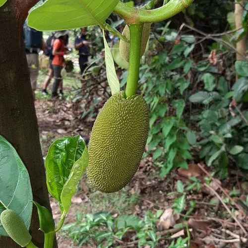

乔木 · 植物界
波罗蜜 Artocarpus heterophyllus

热带著名的果树，果实巨大、直接长在树干上，果肉香甜，是世界上最重的水果之一，单果可达 50 kg。
- 分类
- 门被子植物门纲木兰纲目蔷薇目科桑科属波罗蜜属
- 栖息环境
- 海拔 800 米以下的热带地区，喜高温多湿、光照充足
- 地理分布
- 原产印度西高止山脉一带，中国海南、广东、广西、云南等地栽培
- 保护级别
- 暂无评估；中国未列入国家重点保护野生植物名录
物种志
波罗蜜为常绿乔木，高可达 20 m，树皮灰褐色，全株含白色乳汁；叶片互生，椭圆形至倒卵形，革质，深绿色有光泽。花期 2–3 月，花序生于老枝或主干上，雌花序授粉后发育成果实；果实为聚花果，椭圆形或球形，长可达 60 cm，重可达 50 kg，表面具六角形瘤状突起，果肉由许多黄色假种皮组成，香甜可口。
波罗蜜原产印度西高止山脉一带，中国海南、广东、广西、云南、台湾等地栽培，喜高温多湿、光照充足，适宜深厚肥沃、排水良好的热带土壤。它是世界上果实最大的树种之一，果实直接结在树干上，便于承重；果肉可鲜食，种子可煮食，味似栗子；木材纹理美观、耐腐，可供家具与乐器用，树液可作黏合剂。波罗蜜在东南亚与南亚是重要的经济果树，中国海南、广东的栽培面积逐年扩大。
形态与习性
- 株高可达 20 m，全株含白色乳汁
- 花期2–3 月，花序生于老枝或主干
- 果期6–8 月，单果可达 50 kg
- 光照喜光，不耐长期荫蔽
- 水分喜湿润，怕积水
- 土壤深厚肥沃、排水良好的热带土壤
- 主要用途鲜食果肉、种子煮食、木材制家具与乐器
趣味知识
- 波罗蜜的果实直接长在树干上，单果最重可达 50 kg，是世界上最重的水果之一。
- 波罗蜜的果肉由许多黄色假种皮组成，种子煮熟后味道像栗子。
- 波罗蜜全株含白色乳汁，乳汁黏稠，可作黏合剂使用。
- 波罗蜜木材纹理美观、耐腐，在东南亚常用来制作家具与乐器。